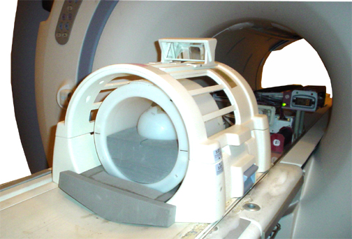

Operating Documentation
Direction 5500113, Rev# 3
Discovery MR750 3.0T Service Methods
Module Version 6.0, Version Date 12/15/09
Operating Documentation |
| Required Persons | Preliminary Reqs | Procedure | Finalization |
|---|---|---|---|
| 1 | Not Applicable | 30 mins | 10 mins |
The Diffusion Weighted Echo Planar Image Quality (DWEPIQ) tool is used to quantitatively measure geometric distortions in Diffusion Weighted Echo Planar Imaging (DWEPI) . This tool allows systems with the DWEPI Option to quantitatively measure the effects of residual eddy currents induced by the diffusion gradients (B0, on-axis, and cross terms) and the corresponding geometric distortions and magnitude reductions.
| Item | Qty | Effectivity | Part# | Manufacturer | |
|---|---|---|---|---|---|
| 100-mm SF9650 (Clear Color) Liquid Silicon Sphere Phantom OR 170-mm SF9650 Liquid Silicon Sphere Phantom | 1 | - | 2258366 | - | |
| TLT Head Loader | 1 | - | 2360031 | - | |
| EPI Head Loader Positioner | 1 | - | 2291292 | - | |
| Head TLT Loader Positioner | 1 | - | 5110241 | - | |
| Item | Qty | Effectivity | Part# | Manufacturer |
|---|---|---|---|---|
| No consumables required | - | - | - |
| Condition | Reference | Effectivity |
|---|
Place an echo planar image (EPI) foam holder and 100 mm (or 170 mm) sphere phantom in the head coil. Landmark the center of the loader. (See Illustration 1.)
Illustration 1: EPI Phantom Positioning, Head Coil

At front enclosure on scanner, press LANDMARK.
Press ADVANCE TO SCAN on the magnet front enclosure.
Insert service key, open the Common Service Desktop, and select the Image Quality tab. To start click DWEPIQ Test. (See Illustration 2.)
Illustration 2: Starting the DWEPIQ Tool

Click the Click here to start the tool link. The DWEPIQ Tool window appears as shown in Illustration 3.
Illustration 3: DWEPIQ Tool Window

| NOTE: | The DWEPIQ Tool window opens with the Select Acq Parameters defaulted to Optimize TE On and Dual Spin Echo On both selected. This is the mode that should normally be run. Optimize TE can be turned off as a troubleshooting step. Disabling Dual Spin Echo On and leaving Optimize TE On enabled almost always results in failures. Context sensitive help describing these functions is available while the cursor hovers over the text. |
If desired, type in a suffix in the box titled Suffix and press the <Enter> key to confirm. This adds the suffix as an extension on all output files to make data results collection easier.
Make sure the phantom diameter is of the correct size in the box titled PhanDiam. If the value changes, hit the <Enter> key to confirm the change.
To cancel this test or to start over, click [Exit].
After making sure the desired Select Acq Parameters are checked and the Suffix and PhanDiam information is as desired, click on [RUN] to start the test.
The test takes approximately six minutes to run. After the test is complete, the results are displayed in the Display Area in the DWEPIQ Tool window. (See Illustration 4.) A Pass/Fail indication is displayed along with possible problem areas to troubleshoot. If the test fails, review the results and refer to Interpreting Data for analysis. You can also view Plot And Output File Descriptions for a description of plot outputs.
Select the Auto Display Plots option in DWEPIQ Tool window to view plots.
Illustration 4: DWEPIQ Tool Test Results in the Display Area

Remove any service tools from the scanner and store appropriately.
Do a Check Scan to ensure system operation before returning to the customer.